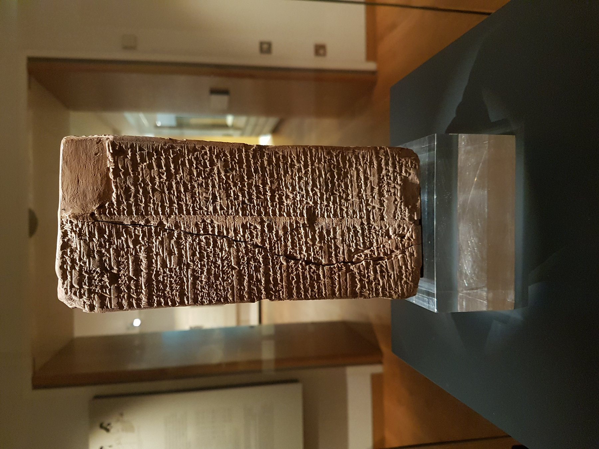

Sumerian King List

- Find Name
- Sumerian King List
- Description
- The Sumerian King List is a Sumerian composition listing cities, kings, and reign lengths from the descent of kingship from heaven to the Isin dynasty, with a flood dividing the antediluvian kings from those after it. The oldest known version dates to the Ur III period (c. 2112-2004 BC), and the best-preserved copy is the Weld-Blundell Prism (WB 444), inscribed c. 1827-1817 BC at Larsa and now in the Ashmolean Museum, Oxford. Its eight antediluvian kings reign for tens of thousands of years each - 241,200 years in total - before 'the Flood swept over' and kingship passed to Kish.
- Historical Period
- c. 2112-1800 BC (Ur III to Isin period)
- Evidence Class
- Contextual
- Interpretations
- The King List is a political and ideological document legitimizing kingship, not a precise chronicle: its impossibly long reigns show it is schematic theology of kingship, not history in the modern sense. For Bible study its value is comparative - it preserves the same Mesopotamian memory structure as Genesis: creation of ordered rule, a great flood as the hinge of history, and long-lived figures before it - while Genesis replaces divine kingship with genealogies leading to Abraham and a moral account of the flood.
- Alternative Names
- Weld-Blundell Prism
- Related Books
- Related Events
- Scripture Illuminated
- Biblical Significance
- The King List shows that Genesis 5 and the flood narrative sit inside a wider Mesopotamian tradition of pre-flood long lives and a flood dividing history, while Genesis retells that tradition with a very different theology.
- Artifact Date
- c. 1827-1817 BC (Weld-Blundell Prism)
- Current Location
- Ashmolean Museum, Oxford
- Date Discovered
- 1922
- Discovery Location
- Larsa, Iraq
- Timeline Era
- Primeval / Patriarchs
Awaiting Review Not yet checked against scholarly sources. Treat its claims as provisional until this entry is reviewed. About verification
Sources: https://en.wikipedia.org/wiki/Sumerian_King_List
https://www.ashmolean.org/sumerian-king-list
https://www.ashmolean.org/sumerian-king-list
Last reviewed: not yet reviewed